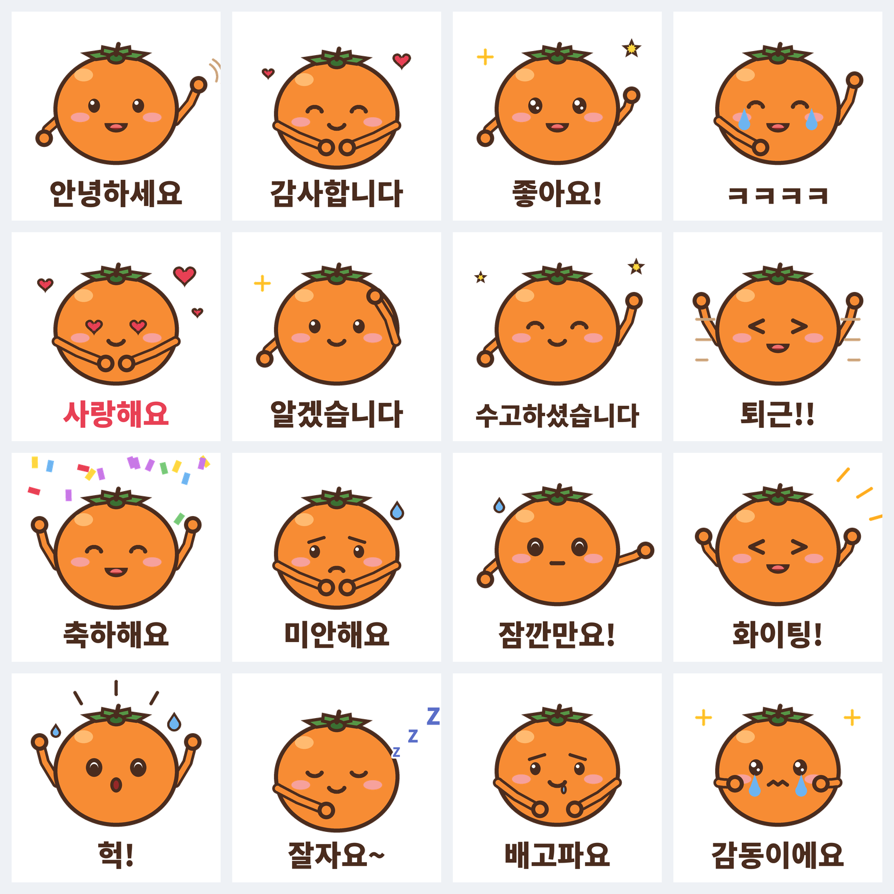

갤럭시(안드로이드)용 · 베타
🍊 내 이모티콘
카톡을 열면 화면 옆에 동그란 단감이 버튼이 떠요. 누르면 이모티콘 창이 올라오고, 골라서 바로 카톡으로 보내요. 가족 사진이나 직접 만든 그림도 내 이모티콘으로 넣을 수 있어요.

⬇️ 내 이모티콘 받기누르면 앱 파일(약 10MB)이 내려받아져요.
설치 순서
1
카톡에서 이 페이지를 열었다면 먼저 오른쪽 위 ⋮ 를 누르고
다른 브라우저로 열기 를 누르세요. (카톡 안에서는 다운로드가 안 될 수 있어요)
2
위의 ⬇️ 내 이모티콘 받기 를 누르세요. 「파일을 다운로드할까요?」가 나오면 다운로드.
3
다운로드가 끝나면 열기 를 누르세요. (못 찾겠으면 「내 파일 → 다운로드」에서 MyEmoticon-beta.apk)
4
「보안을 위해 이 출처의 앱은 설치할 수 없어요」가 나오면 설정 →
이 출처 허용을 켜고 뒤로 돌아오세요.
5
설치 를 누르세요.
「Play 프로텍트」 경고가 나오면 세부정보 더보기 → 무시하고 설치.
「Play 프로텍트」 경고가 나오면 세부정보 더보기 → 무시하고 설치.
설치가 아예 막혀요? 최근 갤럭시는 「자동 차단」이 켜져 있으면 설치가 안 돼요.
설정 → 보안 및 개인정보 보호 → 자동 차단을 잠깐 끄고 설치한 뒤 다시 켜면 돼요.
설정 → 보안 및 개인정보 보호 → 자동 차단을 잠깐 끄고 설치한 뒤 다시 켜면 돼요.
처음 한 번만 허용하기
1
앱을 열면 「다른 앱 위에 표시」 안내가 나와요. 권한 허용하러 가기 →
내 이모티콘을 찾아 허용을 켜고 돌아오세요. 이제 단감이 버튼이 떠요.
2
다음 안내 「사용 정보 접근」도 권한 허용하러 가기 → 내 이모티콘 허용.
이걸 해야 카톡을 열었을 때만 버튼이 떠요.
「제한된 설정」이라며 허용이 안 돼요? 직접 받은 앱이라 폰이 막은 거예요.
그 창을 닫기로 한 번 닫은 뒤, 설정 → 애플리케이션 → 내 이모티콘 → 오른쪽 위 ⋮ → 제한된 설정 허용을 누르고 다시 허용하면 돼요.
그 창을 닫기로 한 번 닫은 뒤, 설정 → 애플리케이션 → 내 이모티콘 → 오른쪽 위 ⋮ → 제한된 설정 허용을 누르고 다시 허용하면 돼요.
쓰는 법
- 카톡 대화방에서 단감이 버튼을 누르면 이모티콘 창이 올라와요. 버튼은 끌어서 옮길 수 있어요.
- 이모티콘을 누르면 카톡 공유 화면이 떠요. 보낼 대화방을 고르고 전송하면 돼요.
- 이모티콘을 꾹 누르면 즐겨찾기 · 복사 · 이름 붙이기 · 다른 세트로 옮기기 · 지우기.
- 세트 줄의 ＋ 로 새 세트를 만들고, ＋ 사진 삽입 으로 갤러리 사진을 넣어요.
- 위쪽 검색에서 이름이나 초성(예: ㅎㅇ → 화이팅)으로 찾을 수 있어요.
- 버튼을 잠깐 끄려면 버튼을 꾹 누르세요. 앱을 다시 열면 켜져요.
알아 두세요
- 갤럭시 등 안드로이드 8.0 이상에서 돼요. 아이폰은 안 돼요.
- 카톡 정식 이모티콘이 아니라 사진으로 보내요. 그래서 카톡에서는 그림 뒤에 연한 색 카드가 보여요. 앱에서 바탕색(파스텔·흰색·검정)과 크기를 고를 수 있어요.
- 넣은 사진은 내 폰 안에만 저장돼요. 앱은 인터넷을 쓰지 않아요.
- 카톡 대화방을 자동으로 골라 주지는 못해요. 카톡이 다른 앱에 그 기능을 열어 주지 않아요.
- 새 버전이 나오면 이 페이지에서 다시 받아 설치하면 돼요. 넣어 둔 이모티콘은 그대로 남아요.